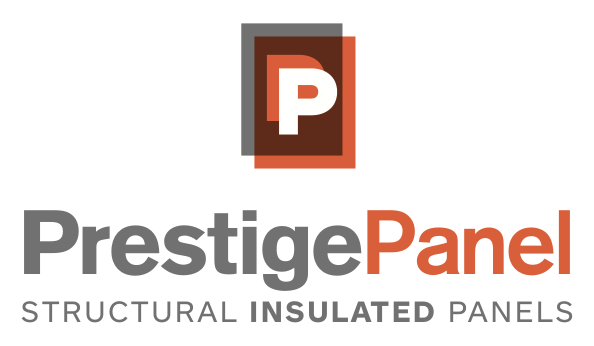

To accelerate British Columbia's transition to passive net-zero housing.
Prestige Panel Solution Inc. is an established SIP manufacturer based in Victoriaville (Quebec, Canada). The last 12 years of experiene has allowed them to develop the industries most cost effecitve SIP technology. The Polyiso foam that they use is considered the most efficient insulation material on the market. This gives Prestige Panel a significant advanatage over insulated constuctiosn materials such as Rock Wool or Expanded Polystyrene (EPS) also available in the construction market. We have partnered with Prestige Panel and are British Columbia's exlusive distributors.
